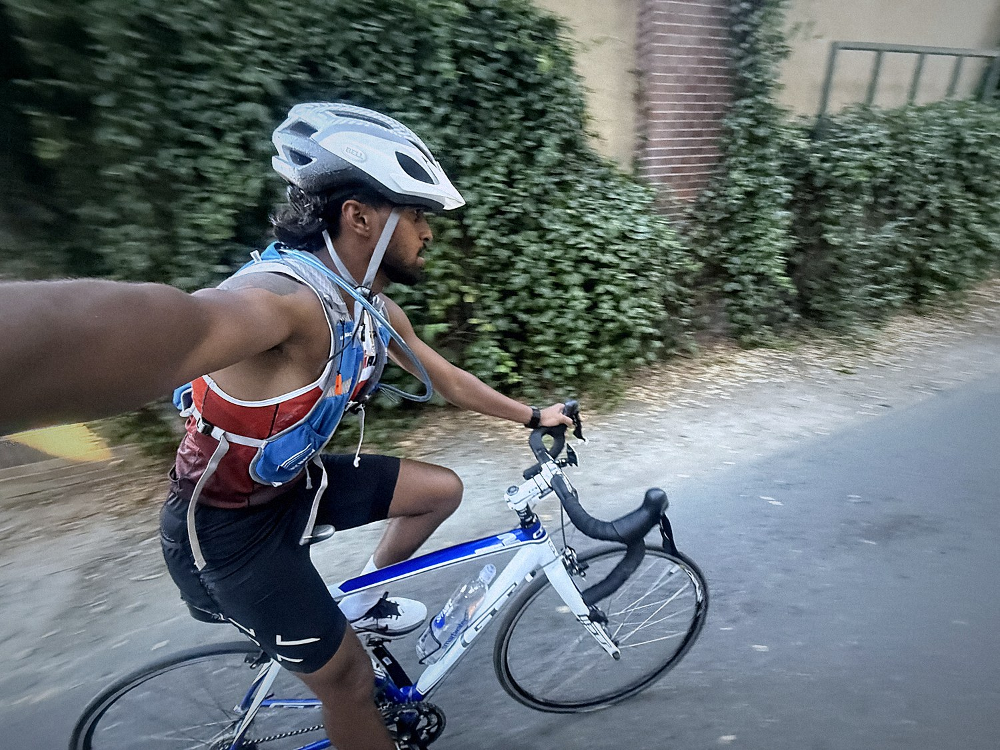
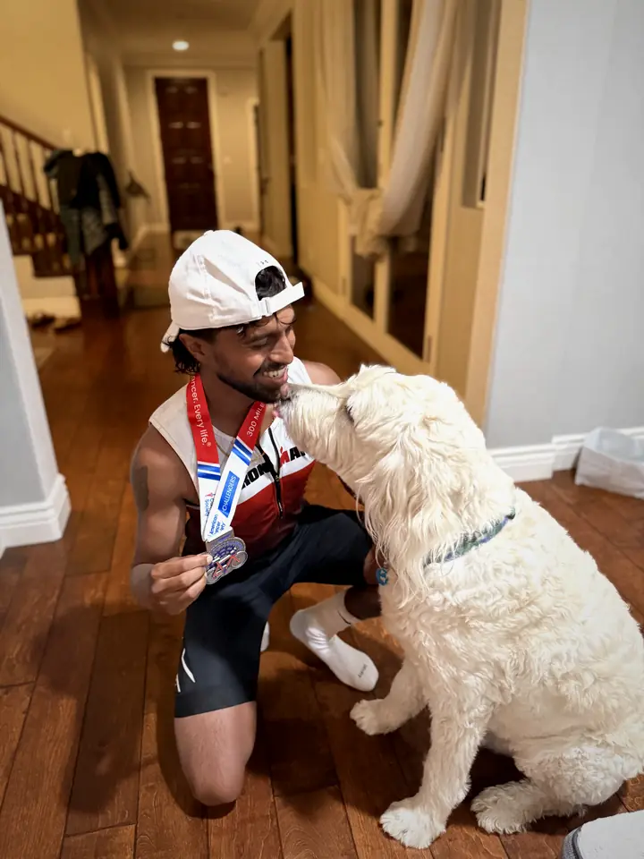
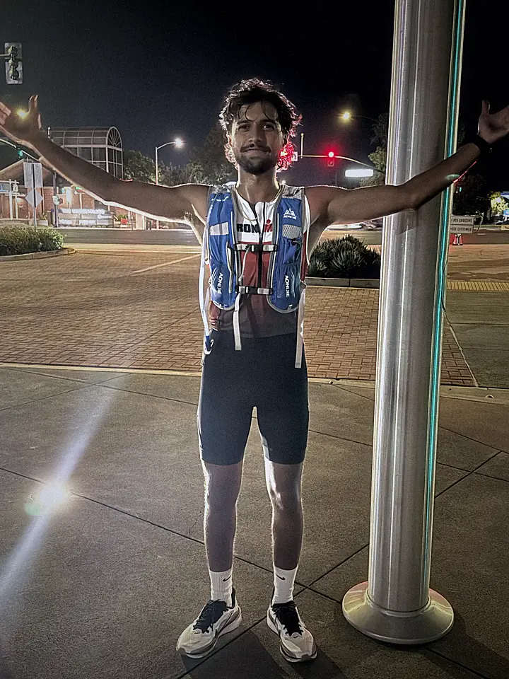
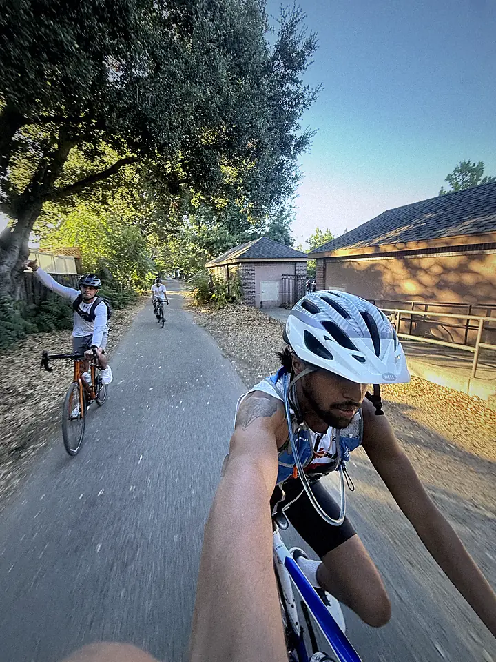
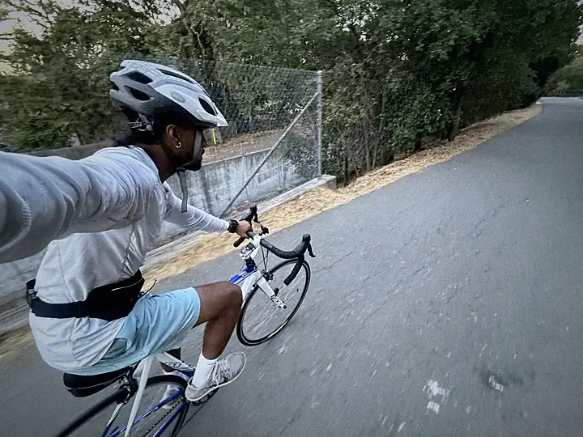
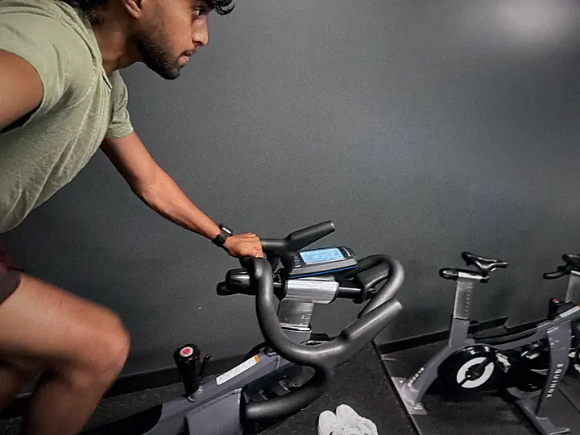
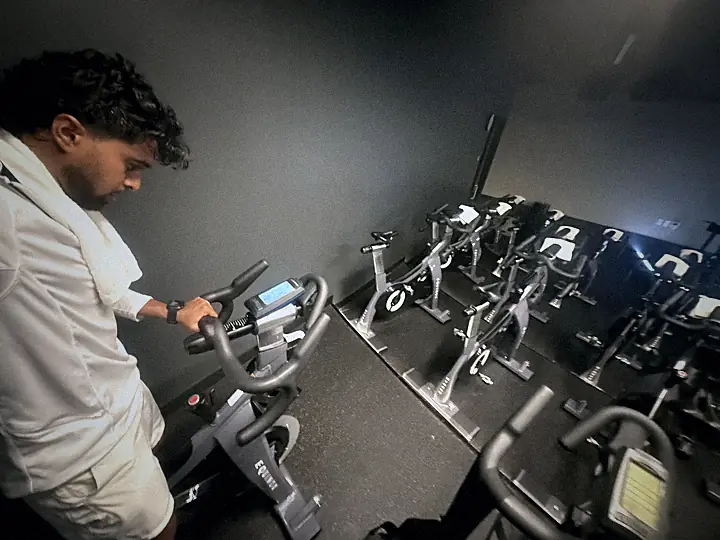
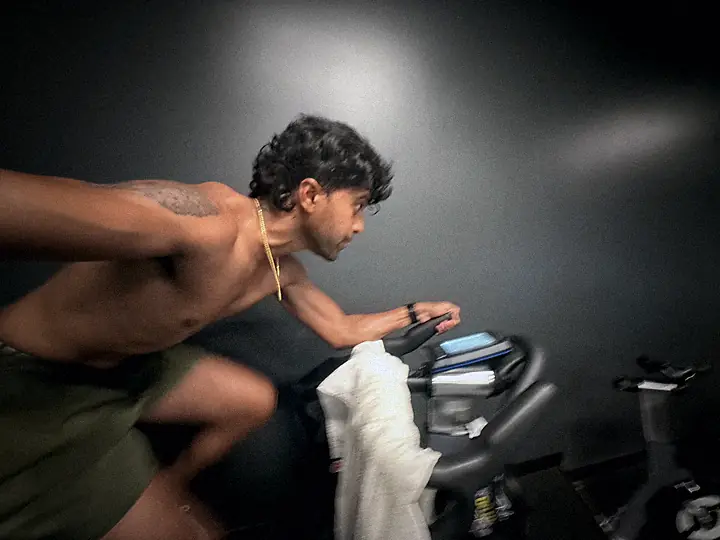
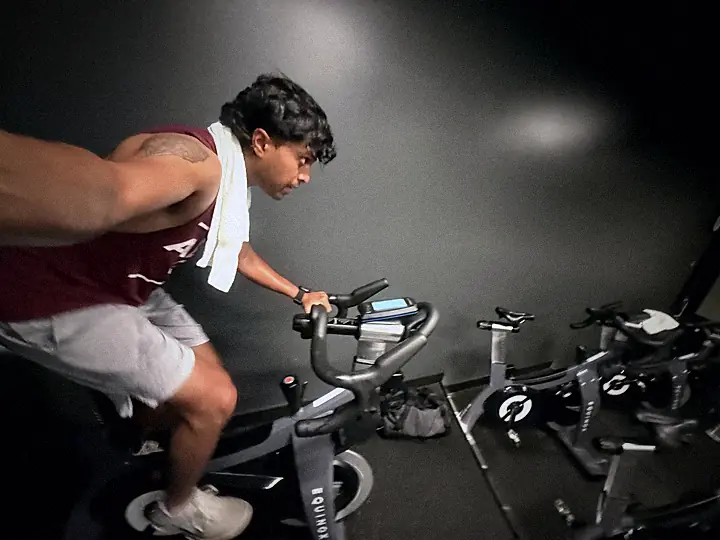
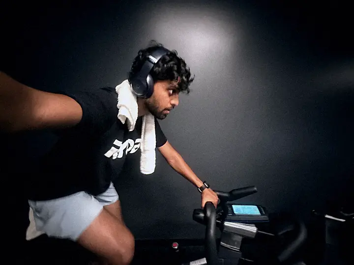

I have done Relay For Life for years. These past few, cancer has reached some of my closest friends and family.
Three hundred miles is a small thing to give back.
We do it for them.
| Day | Session |
|---|---|
| Mon | Swim AM (technique) + short lift |
| Tue | Bike intervals AM · quality run PM |
| Wed | Rest. Eat big, sleep |
| Thu | Swim (endurance) + run |
| Fri | Rest. Eat big, sleep |
| Sat | Long ride + brick run off the bike |
| Sun | Long run + optional swim |
| Week | Swim (3x/wk) | Long ride | Long run |
|---|---|---|---|
| Aug 24 | Done. 2,250 yd continuous on Aug 27, past race distance | 40 mi + brick | 10 mi easy |
| Aug 31 | 2x open water in the wetsuit. Distance is banked, this is for the chop | 45-50 mi + brick | 11 mi easy |
| Sep 7 | 2 sharpeners + 1 ocean swim | 90 min easy | 4 mi easy |
| Sep 13 | Race day. Swim to beat 1:10. Bike at conversation pace. Run at 11-12/mi off the bike. Goal one: the cutoff. Goal two: the finish line (ER or PR ;) | ||